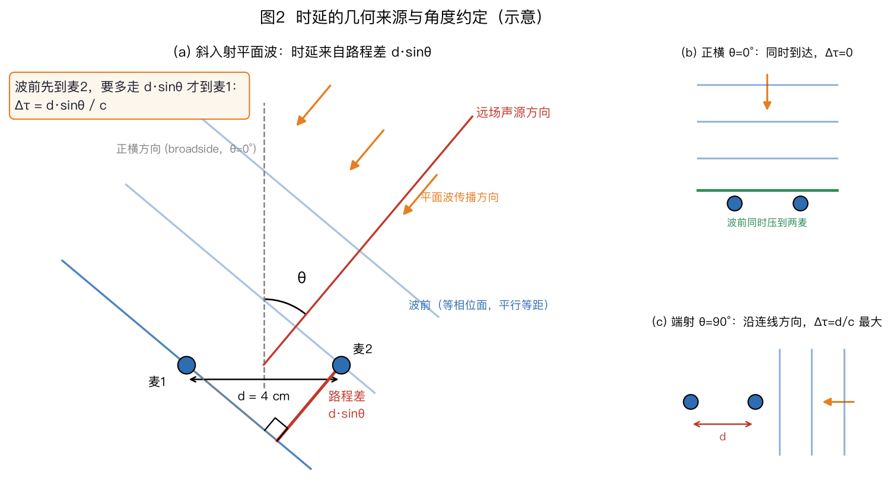
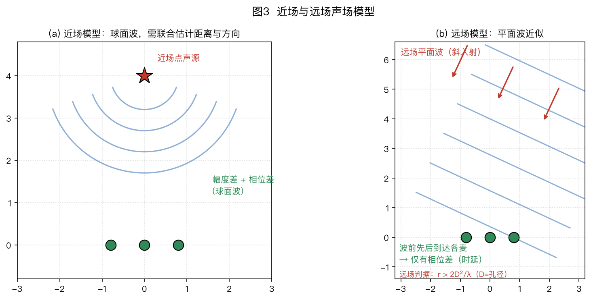
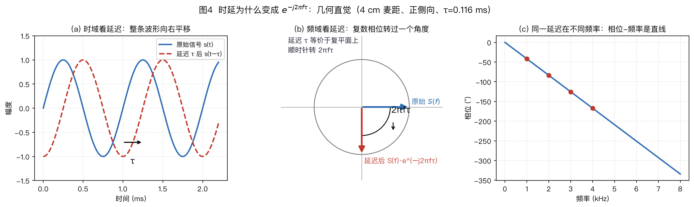
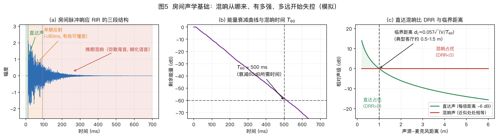
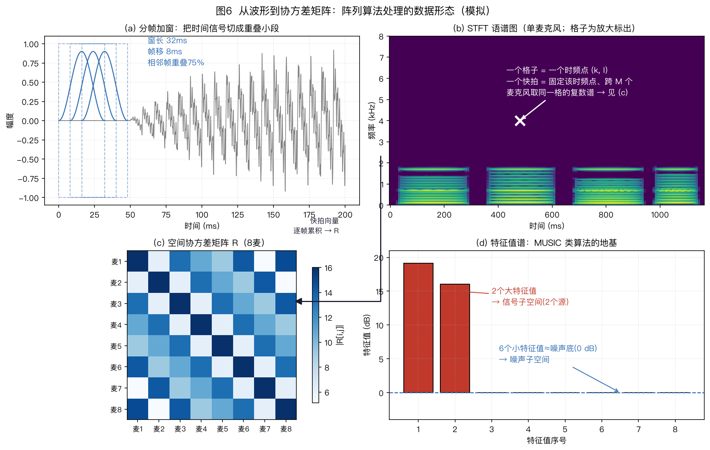
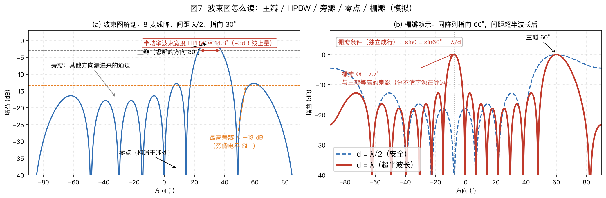

本页目录
⚠️ 本篇是系列教程第 2 篇（共 13 篇），可独立阅读，前后篇见下方导航。
🏠 首页导读：🏠 导读与导航 ｜ 上一篇：第 1 篇 · 问题定义与双耳启示 ｜ 下一篇：第 3 篇 · 阵列几何形态
2. 基础：声音到达阵列时发生了什么
2.1 核心事实：同一声音，到达各麦克风有先有后
声音速度 $c \approx 343$ m/s。两个相距 4 cm 的麦克风，当声音沿两麦连线的方向传来时（先到近麦、后到远麦，时差最大的情形），到达时间差约 $\frac{0.04}{343}\approx 0.116$ ms（16 kHz 采样率下约 2 个采样点）；当声音垂直于连线传来时，两麦同时收到、时差为零。时差随方向连续变化——这正是它能用来测向的原因。 这个“到达时间差”是整个领域的信息源泉，记作 TDOA（Time Difference of Arrival）。
时差的几何来源：$\Delta\tau = d\sin\theta/c$。平面波以角度 $\theta$ 斜入射到间距 $d$ 的两个麦克风：波前是平面，先碰到近麦、再碰到远麦，多走一截路程。把两麦连线（长度 $d$，作斜边）与波前（作一条直角边）画成直角三角形，$\theta$ 角的对边就是路程差 $\Delta = d\sin\theta$（图2）；路程折成时间即得全书最常用的几何关系：
$$\Delta\tau = \frac{d\sin\theta}{c}\text{。}$$
其中 $d$ 为两麦间距（m），$\theta$ 为声源方向角，$c$ 为声速。
全书角度约定（后文凡涉角度一律沿用）：$\theta$ 从正横方向（broadside，垂直于两麦连线的方向）起算——正横 $\theta = 0°$ 时波前同时到达两麦、时差为零；端射方向（endfire，沿两麦连线的方向）$\theta = \pm90°$ 时路程差正好是整整一个 $d$、时差最大。「正横 / 端射」这两个名字后文会反复出现。（有的文献从连线方向起算，同一关系就写成 $\Delta\tau = d\cos\theta/c$——读论文时先确认约定。翻译器：本报告 sinθ 版 = 论文 cosθ 版，两者只差 90°（起算点不同），换算时角度加减 90°即可。）

看什么：盯住那个直角三角形——对边即路程差 $d\sin\theta$；再认角度从正横起算（正横时差为零、端射时差最大）。
离散化与同步：时差是用“格子”量出来的。数字录音先把时间切成格子：16 kHz 采样率下每格 $1/16000 = 62.5$ μs，折成路程约 $343\times62.5\,\mu s \approx 2.1$ cm。而 4 cm 小阵列的最大时差（端射方向）也只有约 117 μs——连 2 个采样格都不到！靠数格子只能得到很粗的方向，所以实际系统必须做亚采样级 TDOA 估计：互相关上采样、抛物线插值，或干脆在频域拟合相位斜率（GCC 类方法，§4.2 详述）。另一个常被忽略的前提是多路信号必须同步采样：同一设备的多通道模数转换器（ADC，Analog-to-Digital Converter）共用时钟，天然同步；跨设备（分布式阵列）各自的晶振有微小快慢（时钟漂移与采样率偏移）。算一笔：50 ppm（百万分之五十）的晶振跑 1 小时差 $50\times10^{-6}\times3600\approx0.18$ 秒，是麦间百微秒级时差的上千倍——跨设备必须对钟（时钟同步），否则累积偏差直接淹没时差，必须专门标定与补偿（§10.2）。
承接：时延的来龙去脉搞清了——下一个问题是，声源离得近时、波前还是平的吗？§2.2 先把远近场分个界。
2.2 近场与远场
- 近场（声源很近）：波前（波阵面，即相位相同的面）是球面，各麦克风信号的时间和幅度都有差别；
- 远场（声源距离远大于阵列尺寸）：波前近似平面，各麦克风收到的是“同一个信号错开一些时间”，幅度几乎相同。
经验判据（Fraunhofer 距离）：当 $r > \dfrac{2D^2}{\lambda}$（$D$ 为阵列孔径、$\lambda$ 为波长）时按远场处理。注意孔径 $D$ 是平方项，阵列越小越容易满足：7 cm 小阵列在 1 kHz（$\lambda=0.343$ m）时只需 $2\times0.07^2/0.343\approx0.029$ m $\approx 3$ cm——所以智能音箱这类小阵列在整个房间内都是远场问题；而 1.26 m 的会议大线阵在 1 kHz 下需要约 9 m 才算远场，放在会议室里近场球面波效应不可忽略，定位与波束都得改用球面波模型。
这个判据怎么来的（三步推导）： 1. 球面波到达阵列中心与到达边缘的路程不一样。阵列半宽 $D/2$，由勾股定理，这个额外路程是 $\sqrt{r^2+(D/2)^2}-r$； 2. $r \gg D$ 时用近似 $\sqrt{1+x}\approx 1+x/2$ 展开：$\sqrt{r^2+(D/2)^2}-r \approx \dfrac{D^2}{8r}$；
B-1 泰勒展开行（上式那一步的具体算账）：先把 $r^2$ 提出来：$\sqrt{r^2+(D/2)^2}-r = r\left[\sqrt{1+x}-1\right]$，其中 $x=(D/2r)^2$ 是个小量；泰勒一阶 $\sqrt{1+x}\approx1+x/2$，代入得 $r\cdot x/2 = r(D/2r)^2/2 = D^2/(8r)$——开根号那坨看着吓人，切到一阶就剩这一个分式，后面 Fraunhofer 判据的分母 $8r$ 就是从这来的。 3. 工程约定：只要这个“球面弯曲造成的误差”小于约十六分之一波长（$\lambda/16$，相位误差约 22.5°，平面波假设就足够准），就算远场：$\dfrac{D^2}{8r} \le \dfrac{\lambda}{16}\;\Rightarrow\; r \ge \dfrac{2D^2}{\lambda}$。
所以 Fraunhofer 距离不是物理突变点，而是“相位误差还能忍”的约定线。
可跳过：为什么容限取 $\lambda/16$（22.5°）：路程误差 $\Delta$ 折成相位误差是 $2\pi\Delta/\lambda$；取 $\Delta=\lambda/16$ 即相位误差 $2\pi/16=22.5°$。这个量级的直觉是：两路信号相位差 22.5° 时，相干叠加的幅度损失只有约 2%（约 0.2 dB），对波束增益几乎没有影响。这是工程上“误差可忽略”的约定取值，不是推导出的常数——记住“取十六分之一波长当容限”这条口径即可。

看什么：对照两幅波前——近场是弯的球面（时间和幅度都有差），远场是平的平面（只剩时差）；远场只剩方向一个未知数，这正是本章向量模型能成立的前提。
承接：远场这顶“平面波帽子”戴稳了——§2.3 把“有先有后”写成能算的向量式。
2.3 信号模型：把“声音有先有后”写成数学
符号约定（全书通用）：先认三类长相——标量（一个数）用普通斜体：$s$、$\tau$、$\theta$、$\sigma^2$；向量（一列数）用头顶箭头：$\vec{x}$、$\vec{a}$、$\vec{w}$（默认列向量，零向量记 $\vec{0}$）；矩阵（一张二维表）用加粗大写：$\mathbf{R}$、$\mathbf{C}$、$\mathbf{\Gamma}$、$\mathbf{E}_n$。箭头与加粗大写一眼可分，不会认错。
再认几枚上标：$^H$ 是共轭转置（频域复数用）、$^\top$ 是转置（时域实数用）、$^*$ 是共轭、$^{-1}$ 是逆；$\hat{\ }$ 表示估计值，$\|\cdot\|$ 为范数、$|\cdot|$ 为幅度。
标量上标星号 vs 向量上标 H：单个复数取共轭用上标星号（如 $X_2^*$），整列向量转置再共轭用上标 H（如 $\vec{x}^H$）——后文凡见上标 H 都是向量/矩阵操作，凡见上标星号都是标量操作，对上号就不会认错。
一个容易踩坑的例外：语音文献习惯用 $X(f)$、$X(n,f)$ 这类大写字母表示“第 $f$ 个频点上的复数谱值”——它们是标量（单个复数），不是矩阵；本报告沿用此习惯，并在首次出现处注明。
字母复用清单（先打个预防针）：受文献惯例所限，有几个字母在不同章节会“一词多义”，含义由上下文决定、首次出现处会注明：$k$（频点索引 / 波数 / WPE 的滞后帧号）、$D$（阵列孔径 / PHD 滤波的强度函数）、$\lambda$（波长 / WPE 的功率谱 / 矩阵特征值）、$K$（声源数 / WPE 的预测阶数）、$s$（源信号 / 追踪中的状态）。遇到时看一眼上下文即可分辨。
本节只做一件事：把 §2.1 那句“同一声音到达各麦有先有后”一步步写成可以计算的式子。分三步走，每一步都交代“为什么”。
第一步：时域模型——每个麦克风一个式子
远场、单声源时，第 $m$ 个麦克风（$m=1,2,\dots,M$）录到的信号：
$$x_m(t) = s(t - \tau_m) + n_m(t)\text{。}$$
- $x_m(t)$：第 $m$ 路录音波形——这是你实际拿到的数据；下标 $m$ 表示“第几个麦克风”，$t$ 是时间；
- $s(t)$：声源发出的原始信号——你想恢复的东西；注意它不带下标 $m$，因为远场平面波假设下各麦收到的是同一个 $s(t)$，只是时间有先后；
- $\tau_m$：声音到达第 $m$ 个麦的时延（秒）——关键未知量，它由声源方向 $\theta$ 决定（所以后面写成 $\tau_m(\theta)$）；
- $n_m(t)$：第 $m$ 路的噪声。
这个式子很诚实，但有个麻烦：“移位”操作不好算——$s(t-\tau_m)$ 里未知数藏在函数的自变量里，没法做加减乘除、没法解方程。
第二步：搬到频率域——延迟从“移位”变成“转个角度”
傅里叶变换有一条关键性质（时移性质）：
$$s(t-\tau)\ \xrightarrow{\text{傅里叶变换}}\ S(f)\,e^{-\mathrm{j}2\pi f\tau}\text{。}$$
左边是时域的“晚到 $\tau$ 秒”，右边是频域的“乘上一个复数”。乘法比移位好处理得多——这就是整个领域都在频域干活的原因。
这个 $e^{-\mathrm{j}2\pi f\tau}$ 到底是什么？它是复平面上一个长度为 1 的箭头，从正实轴出发顺时针转过角度 $2\pi f\tau$（图4(b)）。其中 $\mathrm{j}$ 是虚数单位（$\mathrm{j}^2=-1$）；$e$ 的复指数由欧拉公式定义：$e^{\mathrm{j}\phi} = \cos\phi + \mathrm{j}\sin\phi$；有些书把 $2\pi f$ 写成 $\omega$（角频率），两者是一回事。直觉检验：延迟恰好等于一个周期（$\tau = 1/f$）时转过整整一圈 $2\pi$——波形平移一个周期后与原波形重合，箭头也转回原地，两边对上了 ✓。

看什么：先看（b）——同一个延迟在频域只是复数箭头转个角度，长度仍是 1（只转相位、不改幅度）；再看（c）——相位随频率拉成一条过原点的直线，斜率就是时延。§4.2 的 GCC-PHAT 找的正是这条直线。
再看图4(c)，它是本领域最重要的一张“小图”：同一个延迟，频率越高转角越大，而且严格成正比——相位对频率是一条过原点的直线，斜率就是 $-2\pi\tau$。记住这条直线，§4.2 的 GCC-PHAT 就是在找它。
第三步：把 $M$ 个式子摞起来，写成向量
对第 $m$ 路、第 $f$ 个频点，时移性质给出：
$$X_m(f) = e^{-\mathrm{j}2\pi f\tau_m(\theta)}\,S(f) + N_m(f)\text{。}$$
- $X_m(f)$、$S(f)$、$N_m(f)$：第 $m$ 路/声源在第 $f$ 个频点上的复数谱值——都是标量（单个复数）；
- $e^{-\mathrm{j}2\pi f\tau_m(\theta)}$：延迟造成的相位旋转因子——也是标量。
把 $M$ 路的式子竖着摞起来：
$$\underbrace{\begin{bmatrix} X_1(f) \\ X_2(f) \\ \vdots \\ X_M(f) \end{bmatrix}}_{\vec{x}(f)} \;=\; \underbrace{\begin{bmatrix} e^{-\mathrm{j}2\pi f\tau_1(\theta)} \\ e^{-\mathrm{j}2\pi f\tau_2(\theta)} \\ \vdots \\ e^{-\mathrm{j}2\pi f\tau_M(\theta)} \end{bmatrix}}_{\vec{a}(\theta)} \,S(f) \;+\; \underbrace{\begin{bmatrix} N_1(f) \\ \vdots \\ N_M(f) \end{bmatrix}}_{\vec{n}(f)}\text{。}$$
每一行就是上面那个标量式子；把公共的 $S(f)$ 提到列向量外面，就得到全书最常用的紧凑形式：
$$\vec{x} = \vec{a}(\theta)\,s + \vec{n}\text{。}$$ (2-1)
- $\vec{x}$：$M$ 路信号的列向量（$M$ 为麦数），头顶箭头 = 向量；$\vec{a}(\theta)$：导向矢量（定义见下条）；$\theta$：声源方向（想求的）；$s$：该频点的声源谱（标量），即上面逐行式子中的 $S(f)$；$\vec{n}$：噪声向量（紧凑写法省略频点自变量 $(f)$，下文沿用此简写）；
- $\vec{a}(\theta)$：导向矢量（steering vector）——它是“如果声源真的在 $\theta$ 方向，各麦信号的相对相位应该是什么样”的标准答案。注意它的每个分量模长都是 1（只转相位、不改幅度），分量之间的差异全部来自各麦时延差 $\tau_m(\theta)$。几乎所有定位与波束算法，本质都是“拿真实数据和各个方向的 $\vec{a}(\theta)$ 比对”。
手算一遍：阵列配置——3 麦、间距 4 cm、孔径 8 cm；声源 30°（正横起算，§2.1 的约定与推导；取麦 1 为参考，$\tau_1=0$）、$f=1$ kHz。相邻麦时延差 $\Delta\tau = \frac{d\sin 30°}{c} = \frac{0.04\times 0.5}{343} \approx 58.3$ μs，相邻麦相位差 $2\pi f\Delta\tau \approx 0.366$ rad ≈ 21°，于是 $\vec{a} = [1,\ e^{-\mathrm{j}0.366},\ e^{-\mathrm{j}0.733}]^\top$——读作：“麦 2 比麦 1 相位落后 21°，麦 3 落后 42°”。把这句话从“文字”变成“一个复数向量”，就是导向矢量的全部含义。
混响：实际房间中麦克风收到“直达声 + 一堆反射”的叠加（声源与房间脉冲响应 RIR 的卷积），混响强度用 $T_{60}$ 度量——混响是本领域最难缠的敌人之一（与噪声、干扰、自噪并列，见 §1），它到底是怎么来的、怎么定量描述，见下一节。
承接：直达声这条主线抻直了——§2.4 该请出房间这个“猪队友”，看看混响是怎么搅局的。
2.4 房间声学：混响到底是怎么来的
房间脉冲响应（RIR, Room Impulse Response）：在房间里拍手一次，麦克风录到的“啪——嗡嗡嗡”就是 RIR。它就是房间的“指纹”：麦克风收到的任何声音 = 干净声音与 RIR 做卷积。RIR 分三段（图5(a)）：
- 直达声：从声源直线到达，最干净、携带最准的方向信息；
- 早期反射（到达后约 80 ms 内）：只反射一两次的回声。它响度上有帮助，但会模糊方向线索——人类听觉靠“优先效应”（先入为主）不被它带偏，算法却容易被带偏；
- 晚期混响：经无数次反射后形成的弥散尾音，从四面八方均匀涌来、与直达声不再相关——它在数学上等价于一个各向同性的噪声场，这正是波束形成度量 DI（指向性指数，§2.6）专门对付的对象。

看什么：(a)认三段——直达声、早期反射、晚期混响；(b) $T_{60}$ 是声能衰减 60 dB 的时间；(c)临界距离只有 0.5~1.5 m——3 m 外交互天然运行在混响占优区。
混响有多强：$T_{60}$ 与赛宾公式。$T_{60}$ 是声能衰减 60 dB 所需的时间（图5(b)），可用赛宾（Sabine）公式估算：
$$T_{60} = \frac{0.161\,V}{A}, \qquad A = \sum_i S_i\,\alpha_i\text{。}$$
- $V$：房间体积（m³）；$S_i$、$\alpha_i$：第 $i$ 个表面的面积与吸声系数（0=全反射的光滑瓷砖，1=全吸声的开放窗户）。
- 算例（本例是房间算例，不涉阵列配置）：5 m × 4 m × 2.8 m 的客厅（$V=56$ m³），软硬装合计吸声量 $A\approx18$ m²，则 $T_{60}\approx0.5$ s——正是“安静客厅 0.3~0.5 s”的来历；瓷砖大食堂 $A$ 小一个量级，$T_{60}$ 可达 2 s 以上。
这个公式怎么推出来的（五步，能量守恒 + 一个几何事实）： 1. 模型：混响期的声能在房间里近似均匀分布（扩散场假设），声线不断撞墙，每撞一次被吸收掉一部分； 2. 几何事实：声线在房间中平均飞行 $\ell = \dfrac{4V}{S}$ 米撞一次墙（统计几何的经典结果，$S$ 是所有墙面的总面积）。直觉检验：房间越大飞得越远、墙越多撞得越勤，都对得上；
可跳过：式中 4 从哪里来（平均自由程 $4V/S$）：想象房间里各方向均匀乱飞的大量声线。任取一个小体积元，它“看到”的墙面投影平均后恰好是总表面积的 $1/4$（名字不用记：凸体平均投影面积 = 表面积$/4$，直觉是球面各方向投影平均带来因子 $1/4$）。单位体积内声线单位时间扫过的“墙面碰撞率” $=cS/(4V)$，走一步的平均距离即其倒数 $\ell=4V/S$。量纲检查：$V/S$ 是长度，乘无量纲的 4 仍是长度 ✓；立方房间边长为 $L$ 时 $\ell=4L^3/(6L^2)=2L/3$，与“穿过房间约半个边长撞一次墙”的直觉一致。 3. 每秒能量损失率：撞墙频率 $= \dfrac{c}{\ell} = \dfrac{cS}{4V}$（次/秒），每次损失能量比例 $\bar\alpha$（平均吸声系数），于是每秒损失率 $= \dfrac{cS\bar\alpha}{4V} = \dfrac{cA}{4V}$； 4. 列方程求解：$\dfrac{\mathrm{d}E}{\mathrm{d}t} = -\dfrac{cA}{4V}E$——“损失率正比于当前能量”的方程，解是指数衰减 $E(t) = E_0\,e^{-\frac{cA}{4V}t}$； 5. 代入定义收尾：$T_{60}$ 是能量衰减 60 dB 的时间——注意 60 dB 是能量比 $10^6$（不是 $10^3$：能量的 dB 用 $10\log_{10}$，$10\log_{10}10^6 = 60$）。令 $e^{-\frac{cA}{4V}T_{60}} = 10^{-6}$，两边取对数：$\frac{cA}{4V}T_{60} = 6\ln 10$，解出 $$T_{60} = \frac{24\ln 10}{c}\cdot\frac{V}{A} = \frac{55.3}{343}\cdot\frac{V}{A} \approx 0.161\,\frac{V}{A}\ \checkmark\text{。}$$ B-2 “0.161”链（一行看清三个数怎么串起来）：$24\ln10\approx24\times2.3026\approx55.26$；声速 $c=343$ m/s；$55.26/343\approx0.161$——链条是“60 dB 能量比 $10^6$ 取对数得 $6\ln10$、乘往返因子 4 得 $24\ln10$、除以声速得 0.161”。换了声速（比如水下）只换最后一个环节，链条照用。
适用边界：推导用了“扩散场 + 弱吸收”假设。当平均吸声系数较大（$\bar\alpha > 0.3$，比如录音棚）时赛宾会高估混响时间，要换 Eyring 公式 $T_{60} = \dfrac{-0.161V}{S\ln(1-\bar\alpha)}$（极端检查：$\bar\alpha=1$ 时 Eyring 给出 $T_{60}=0$，物理正确；赛宾却给出非零值，错了）。
多远开始失控：直达混响比 DRR 与临界距离。直达声随距离按平方反比衰减（每远一倍弱 6 dB），而晚期混响在房间里处处一样响。两者相等的位置叫临界距离 $d_c$：
$$d_c \approx 0.057\sqrt{\frac{V}{T_{60}}}\ \text{(m)}\text{。}$$
（此式默认声源全向辐射，即指向性因子 $Q=1$；若声源有指向性（如人声朝前更响），把 $Q$ 乘进根号内的分子：$d_c \approx 0.057\sqrt{QV/T_{60}}$。）
这个公式怎么推出来的（四步，全是能量账）： 1. 直达声能量密度：声源功率 $W$ 均匀洒在半径 $r$ 的球面上，距离 $r$ 处的能量密度 $\propto \dfrac{W}{4\pi r^2}$——平方反比，越近越强； 2. 混响声能量密度：房间里的混响能量不断被墙面吸收、又不断被声源补充，稳态下弥散能量密度 $\propto \dfrac{4W}{A}$（$A$ 是赛宾吸声量）——与位置无关，处处一样；
可跳过：弥散能量式中 4 从哪里来（$4W/A$）：稳态能量平衡是“注入功率 $=$ 吸收功率”。墙面每秒吸收的功率 $=$ 能量密度 $E$ $\times$ 声速 $c$ $\times$ 有效吸收面积。关键一步：各向同性声场中，只有面向墙面方向的能量流才会被吸收，对半球方向平均后有效因子恰为 $1/4$（入射角余弦在半球上的平均 $=1/2$，再乘来回两向各占一半 $=1/4$），于是吸收功率 $=E\cdot cA/4$。令它等于注入功率 $W$，解得 $E=4W/(cA)$；归一掉 $c$ 即正比于 $4W/A$。与上一步平均自由程里的 4 是同一个几何根源：都是“各向同性场向一面墙投影”带来的 $1/4$。 3. 令两者相等（临界距离的定义）：$\dfrac{1}{4\pi r^2} = \dfrac{4}{A} \;\Rightarrow\; d_c = \sqrt{\dfrac{A}{16\pi}}$； 4. 代入赛宾公式 $A = \dfrac{0.161V}{T_{60}}$：$d_c = \sqrt{\dfrac{0.161V}{16\pi\,T_{60}}} = \sqrt{0.00321\,\dfrac{V}{T_{60}}} \approx 0.057\sqrt{\dfrac{V}{T_{60}}}$。 B-3 “0.057”行（上式最后一步的算账）：$0.161/(16\pi)=0.161/50.27\approx0.003203$，开方 $\sqrt{0.003203}\approx0.0566\approx0.057$——就这一行，记住 0.057 是“赛宾 0.161 除以球面 $16\pi$ 再开方”，以后看到临界距离公式能自己验算，不用死记。
典型客厅 $d_c$ 只有 0.5~1.5 m（图5(c)）。智能音箱在 3 m 外交互时，混响能量已经超过直达声（DRR < 0）——远场语音难，难在使用场景天然运行在混响占优区。DRR 也是估计声源距离的物理依据。Montana State 房间声学讲义
仿真怎么造混响：镜像法（Image Method，镜像声源法，Allen & Berkley 1979）把墙面反射等效为镜像声源的叠加，开源库 pyroomacoustics 可直接生成任意房间、任意阵列的房间脉冲响应（RIR）：拿 ShoeBox 类建房、调 compute_rir 算脉冲响应（函数名以版本文档为准）。
反过来，怎么实测一个房间的混响：粗糙做法是拍手/爆破气球后看衰减（只能估个大概）；标准做法是指数正弦扫频（ESS, Farina 2000）——播放一段频率从低到高指数上升的扫频信号，录音后做反卷积即可干净地分离出 RIR，抗噪且不受播放设备失真影响（失真成分会被推到 RIR 的“负时间”区直接丢弃）。也可以用普通语音盲估 $T_{60}$ 和 DRR（例如利用两麦相干函数估计直达-弥散比），供无法播放测试音的在线场景使用。
承接：房间这笔混响账算完了——§2.5 换个频道，讲讲数据在代码里到底长什么样（STFT、快拍、协方差）。
2.5 数据怎么组织：STFT、快拍与协方差矩阵
后面的算法反复出现三个词——STFT、快拍、协方差矩阵，先在这里一次讲清。
STFT（短时傅里叶变换，Short-Time Fourier Transform）分三步把波形变成表格：把波形切成重叠的小段（常用窗长 32 ms、帧移 8 ms，相邻帧重叠 75%），每段加窗（汉宁窗，压制两端突变）后做 FFT，得到一张“时间 × 频率”的复数网格——语谱图（图6(a)(b)）。每个格子（时频点，TF-bin）是一个复数，同时含幅度与相位。
为什么非要这张表？因为宽带语音由此被切成一堆窄带问题：同一频点上，阵列模型 $\vec{x}=\vec{a}(\theta)s+\vec{n}$ 才严格成立——时延 $\tau$ 对应的相位旋转 $2\pi f\tau$ 随频率变化，只在一个频点内，“延迟”才恰好是“乘一个固定复数”；宽带信号的导向矢量随频率而变，共用不了一个 $\vec{a}(\theta)$。这就是第 4、5 章算法逐频点（STFT 后）处理的原因。
STFT 分帧数字例子：阵列配置——4 麦、常规小间距；采样率 16 kHz、窗长 32 ms、帧移 8 ms。窗长折成采样点 $=16000\times0.032=512$ 点（FFT 常用 512 点）；帧移 $=16000\times0.008=128$ 点，相邻帧重叠 $(512-128)/512=75\%$。1 s 语音共 $(1000-32)/8+1\approx122$ 帧；每帧 FFT 给出 257 个有效频点（0~8 kHz，频率分辨率 $16000/512=31.25$ Hz）。于是 1 s、4 麦录音展开为 $122\times257=31354$ 个时频点，每个点上一个 4 维快拍向量——这就是后文协方差矩阵 $\hat{\mathbf{R}}(f)$ 在每个频点上平均的对象（每频点约 122 个快拍参与平均）。
快拍（snapshot，快照向量）：固定一个频点 $f$、取某一帧 $t$，把 $M$ 个麦克风在该时频点 $(f,t)$ 的复数谱排成列向量 $\vec{x}(f,t)$，就是一个快拍——相当于阵列在某瞬间拍下的一张“空间照片”（图6(b) 里标的那个格子就是它，按正文记作 $(f,t)$，$f$ 是频点号、$t$ 是帧号）。
空间协方差矩阵：单张快拍太噪，把几十到几百个快拍平均：
$$\hat{\mathbf{R}}(f) = \frac{1}{T}\sum_{t} \vec{x}(f,t)\,\vec{x}^H(f,t)\text{。}$$ (2-2)
它是 $M\times M$ 的复数矩阵，第 $m,n$ 个元素记录“麦 $m$ 与麦 $n$ 在该频点上的相关程度与相位差”（图6(c)）。它浓缩了阵列数据的全部二阶统计信息：几个声源、各自多强、从哪个方向来、噪声如何分布。Capon、MVDR、MUSIC 全都是对 $\hat{\mathbf{R}}$ 的不同“读法”；而 MUSIC 的核心操作——特征分解（图6(d)：两个大特征值对应两个声源张成的信号子空间，其余小特征值对应噪声子空间），也只是把这个矩阵“按方向成分拆开”。

看什么：从（a）（b）的语谱图格子（每个时频点一个复数）看到（c）的协方差热图（麦与麦有多相关、相位差多少，一眼可读）；再看（d）的特征值——分成“大的一小群 + 小的一大片”，大群的个数就是声源数。
两个常考的细节：①快拍数太少时 $\hat{\mathbf{R}}$ 估计不准、小特征值乱跳，这是 Capon/MVDR 需要“对角加载”（§5.4）的根源；②帧移小、相邻帧高度重叠，快拍间并不独立，有效快拍数比帧数少。
协方差估计的半节：快拍不够时会发生什么（读到这够用，做法见 §5.4、§8.1）：①崩溃线——快拍数 $T$ 连麦数 $M$ 的两倍都不到（$T\lt 2M$）时，$\hat{\mathbf{R}}$ 接近奇异：求逆直接炸，小特征值全是估计噪声——Capon/MVDR 这类要 $\hat{\mathbf{R}}^{-1}$ 的算法第一个倒下；经验线是 $T\ge2M$ 才勉强可用，$T\gg M$ 才稳。②收缩估计的思想——数据不够就别全听数据的：$\hat{\mathbf{R}}_{shrink}=(1-\rho)\hat{\mathbf{R}}+\rho\frac{\mathrm{tr}\hat{\mathbf{R}}}{M}\mathbf{I}$，在“听数据的 $\hat{\mathbf{R}}$”和“听先验的单位阵”之间按 $\rho$ 折中，$\rho$ 可按 Ledoit-Wolf 准则自动定；§5.4 的对角加载就是它的手调版（$\rho$ 手工拍脑袋）。③掩码法的衔接——与其事后修矩阵，不如事前挑快拍：只拿目标占优的时频点参与平均（§8.1 的掩码思想），等于把被干扰/混响污染的快拍先踢出去再平均，$\hat{\mathbf{R}}$ 天然干净得多。记住这条链：快拍不够→矩阵病态→要么收缩（修矩阵）、要么掩码（挑快拍）。
顺带认识一下语音这个信号本身（后面所有“为什么这样做”都与这三条有关）：①基频约 80~300 Hz，能量集中在 300 Hz~3.4 kHz（这是电话带宽的口径；宽带语音延伸到 8 kHz，而辅音、摩擦音的能量恰恰集中在 4 kHz 以上），谐波结构明显——周期信号做互相关会有基音假峰，所以 TDOA 算法要宽带白化（§4.2）；②短时平稳、长时非平稳——所以按 32 ms 分帧；③时频稀疏——任何一个时频点上通常只有一个声源占优，这是掩码类方法与 GSS 聚类可行的物理根基（§8.1）。调和一句（与 §1.1 呼应）：4 kHz 以上声级差确实大，但 3~4 cm 间距的小阵列在这一段已有栅瓣（§2.6），所以高频段一般只做增强、掩码，不做窄带定位——定位的主力仍在低中频。
承接：数据容器备好了——§2.6 教你读波束图，四个度量一次配齐。
2.6 怎么衡量一个波束好不好：先学会读波束图
本节路线图：四个度量回答四个问题——主瓣多窄（看得多细）？旁瓣多高（漏多少）？DI（抗混响/弥散噪声的能力）？WNG（抗自身底噪的能力）？
前面说过，波束形成器就是“让某个方向的信号通过、压住其他方向”。把它对每个方向的增益都画出来，就是波束图（beampattern）——横轴是方向，纵轴是增益（dB）。它是本节四个度量的共同载体，先花一分钟学会读它（图7(a)）：
- 主瓣（main lobe）：想听的方向上拱起的那个大峰。峰顶增益 0 dB（无失真通过）；
- 旁瓣（side lobes）：主瓣两侧一连串越来越矮的小峰——它们是其他方向的声音漏进来的通道；
- 零点（nulls）：瓣与瓣之间的深谷——这些方向上各麦信号恰好相消干涉，几乎完全听不到；
- 为什么长这样：同相叠加形成峰、反相抵消形成谷——完整推导（等比数列求和）见 §5.2，此处先会读图。

看什么：在（a）里先认出三样东西——拱起的主瓣（峰顶 0 dB）、两侧漏声的旁瓣、瓣之间的深谷零点，再读红色双箭头（−3 dB 宽度约 16.7°，即主瓣宽度）；到（b）只看一个鬼影——间距拉到 λ 后冒出的等高假峰（−7.7°栅瓣），方向从此有了分身。
度量一：主瓣宽度 HPBW（分辨率，Half-Power Beam Width）。主瓣两侧功率降到峰值一半的两个点之间的夹角，就是半功率波束宽度。
先把“半功率”在图上对上号：功率减半是 $10\log_{10}0.5 = -3.01$ dB；而波束图按幅度画（$20\log_{10}|B|$），功率减半对应幅度 $1/\sqrt{2}\approx0.707$，读出来也是 $20\log_{10}0.707 = -3.01$ dB——两套刻度在这点重合（功率本来就是幅度的平方）。所以“半功率点”和“−3 dB 点”是同一个位置的两个名字（图7(a) 的红色双箭头）。顺带结清最容易混的一笔账：幅度减半是 −6 dB，对应功率只剩 1/4——别和半功率搞混。
HPBW 直接就是分辨率：两个说话人站得比主瓣宽度还近，波束图就分不出谁是谁（两个峰糊成一个胖峰）。经验公式（$D=(M-1)d$ 为有效孔径，即首末两麦的真实跨度；大 $M$ 时 $(M-1)d\approx Md$，两种写法近似相等，本报告统一用有效孔径口径）：
$$\mathrm{HPBW} \approx \frac{0.886\,\lambda}{D\cos\theta_0} = \frac{0.886\,\lambda}{(M-1)d\cos\theta_0}\ \text{rad}\text{。}$$
可跳过：系数 0.886 从哪里来：均匀线阵的归一化阵因子是 Dirichlet 核 $\dfrac{\sin(M\psi/2)}{M\sin(\psi/2)}$（§5.2 的等比数列求和结果），其中 $\psi=2\pi d(\sin\theta-\sin\theta_0)/\lambda$。半功率点要求幅度 $=1/\sqrt2$，即 $|\sin(M\psi/2)/(M\psi/2)|\approx1/\sqrt2$（大 $M$ 时分母 $\sin(\psi/2)\approx\psi/2$）。解 $\sin x/x=1/\sqrt2$ 得 $x\approx1.3916$（$x=M\psi/2$），于是单边 $\psi_{3dB}=2\times1.3916/M=2.7832/M$；双边宽度换算到 $\sin\theta$ 域再除以 $\cos\theta_0$（$\mathrm{d}\sin\theta$ 微分带来 $1/\cos\theta_0$），得 $\mathrm{HPBW}=2\times1.3916/(\pi)\times\lambda/(Md\cos\theta_0)$，而 $2\times1.3916/\pi=0.8859\approx0.886$。
直觉一句话：分子本质是“sinc 函数 −3 dB 点的位置常数”，记住 0.886 来自 $\sin x/x=0.707$ 的解即可。注意上式分母用的是有效孔径 $D=(M-1)d$（§3.2 算例 3-4 较真过的那一厘米之差）；大 $M$ 时与 $Md$ 近似相等，小阵列必须较真。
读法：孔径越大、频率越高（波长越短），主瓣越窄、分辨率越好；斜着看（$\theta_0$ 大）主瓣变宽。围栏：$\theta_0$ 只在 $\pm60°$ 内用这个公式；算出主瓣宽 $>120°$ 时按全向理解（主瓣比可视范围还宽，公式的小角近似已失效，不是真有个 120°+ 的瓣）。代入数字感受一下（阵列配置——小阵列、孔径 $D=7$ cm）：1 kHz 时 $0.886\times0.343/0.07\approx4.3$ rad $\approx249°$——主瓣宽到公式本身已经失效（主瓣比整个可视范围还宽），实际波束接近全向；8 kHz 时 $\approx0.54$ rad $\approx31°$，才真正进入“几十度”量级——这就是为什么小阵列“看不清低频”。这组数字正是 §3.2 的算例 3-3、算例 3-4 要算给你看的。图7(a) 那条 8 麦、间距 $\lambda/2$、指向 30° 的波束，按有效孔径口径代入公式得 $0.886/(7\times0.5\times\cos30°)=0.886/3.031\approx0.292$ rad $\approx16.7°$（分母 $(M-1)d=7\times0.5\lambda=3.5\lambda$）。图上红色双箭头标的就是这个 16.7°。
B-4 “249°”展开（上面 1 kHz 那笔账的明细）：$0.886\times0.343/0.07\approx0.3039/0.07\approx4.34$ rad，换成角度 $4.34\times(180/\pi)\approx248.7°\approx249°$——线阵整个可视范围才 180°（±90°），算出 249° 等于说“主瓣比天还宽”，公式推导里的小角近似早已不成立，正确读法是“接近全向、基本没有方向选择能力”，而不是“波束宽 249°”。
度量二：旁瓣电平 SLL（泄漏）。最高的那个旁瓣比主瓣低多少 dB。均匀加权的 DSB（DSB = 延迟求和波束形成器，即“对齐后等权相加”，详见 §5.2）约 −13 dB——换算过来是：最强泄漏方向的功率仍有主瓣方向的约 5%（$10^{-13/10}$）。如果恰好有个大音量干扰（电视）落在那个方向，它就会漏进来 5%——所以 MVDR 要专门在干扰方向挖零陷（§5.4）。压低旁瓣的经典办法是给麦克风加权（中间重、边缘轻，如汉明加权），代价是主瓣变宽——又是权衡。
可跳过：−13 dB 从哪里来：均匀加权阵因子近似为 $\sin x/x$ 型（$x$ 正比于偏离指向的相位）。第一个旁瓣是该函数第一个负向极值点，位置约 $x\approx4.4934$（方程 $\tan x=x$ 的首个非零解），函数值 $\sin(4.4934)/4.4934\approx-0.2172$。幅度比 $0.2172$ 折成功率 $0.2172^2\approx0.0472$，取 $10\log_{10}0.0472\approx-13.26$ dB——这就是“约 −13 dB”的来历。直觉：等权矩形窗的傅里叶变换是 sinc，旁瓣是 sinc 振铃的第一个波峰，高度由 sinc 包络 $1/x$ 决定；加窗（汉明等）就是把矩形边沿削薄，振铃随之降低。
度量三：指向性指数 DI（抗混响/抗弥散噪声）。混响尾音、风噪这类噪声从四面八方均匀地涌来。DI 回答的是：“如果所有方向均匀放同样强度的噪声，这个波束能挡掉多少？”——主瓣方向增益的平方，除以全空间平均增益的平方，再取对数：
$$\mathrm{DI} = 10\log_{10}\frac{4\pi\,|B(\theta_0)|^2}{\int |B(\theta)|^2\,\mathrm{d}\Omega}\text{。}$$
$B(\theta)$ 是波束图（标量函数）；$\mathrm{d}\Omega$ 是立体角微元——球面上“一小块面积所张的角”，整个球面共 $4\pi$（正如平面上整圆是 $2\pi$ 弧度）；分母的积分就是“把波束图在整个球面上按立体角平均”。DI = 0 dB 表示完全不挑方向（单个全向麦克风就是这样）；DI 越大，这盏“聚光灯”越聚——人话就是“灯有多聚”（§5.1 同款说法），漏到别处的光越少。超指向波束形成（§5.3）就是专门优化这个数。
度量四：白噪增益 WNG（抗自身噪声/稳健性）。每个麦克风自己有底噪（热噪声），各通道互相独立。波束权重把它们合起来时会放大多少倍？这就是 WNG：
$$\mathrm{WNG} = 10\log_{10}\frac{|\vec{w}^H\vec{a}(\theta)|^2}{\|\vec{w}\|^2}\text{。}$$
分子是目标方向的增益平方，分母是权重自身的能量。WNG 是负数意味着权重把自身噪声放大了——这在超指向设计里真实会发生：权重变得巨大且正负相抵，任何麦克风失配都被同步放大，波束就“碎”了。上限是 $10\log_{10}M$（DSB 达到，§5.2 有证明）。
DI 与 WNG 的此消彼长是波束设计的第一性权衡（详见 §5.3、图15）：想要更尖的指向（DI 高），就要牺牲稳健性（WNG 低）；反之亦然。
分辨率极限（瑞利限，Rayleigh limit）。既然 HPBW ≈ 0.886λ/D，那么“两个源至少离多远才能分清”的答案也就是这个量级——约 $\lambda/D$（弧度）。这个极限来自光学（瑞利判断两颗星的艾里斑何时可分），在阵列里完全同理：它是衍射决定的物理极限，波束扫描类方法再聪明也突破不了。子空间类方法（MUSIC 等，§4.6）在理想模型下可以突破它，故称超分辨（super-resolution）；代价是对模型误差敏感——天下没有免费的超分辨。
空间混叠（栅瓣）：相邻麦间距 $d > \lambda_{\min}/2$ 时波束图出现与主瓣等高的假峰——图7(b) 里同样 8 麦阵列指向 60°，间距从 λ/2 加到 λ 后，在 −7.7° 冒出一个和主瓣一模一样高的鬼影，此时分不清声源在 60° 还是 −7.7°。
这个 −7.7° 可以手算验证：栅瓣条件 $\sin\theta-\sin\theta_0=\pm\lambda/d$，取 $d=\lambda$、$\theta_0=60°$，得 $\sin\theta=\sin60°-1=0.8660-1=-0.1340$，$\theta=\arcsin(-0.1340)\approx-7.7°$——与图7(b) 标注一致。消费级阵列（麦距 2~4 cm）的无混叠带宽约 4.3~8.6 kHz（验算 $c/(2d)=343/(2\times0.04)\approx4.3$ kHz、$343/(2\times0.02)\approx8.6$ kHz）。
这其实就是空间上的奈奎斯特采样定理：时间上，采样率要大于两倍最高频率（$f_s \ge 2f_{max}$），否则频谱混叠；空间上，麦克风就是沿空间轴的“采样点”，间距要小于半个波长（$d \le \lambda/2$），否则方向谱混叠（栅瓣）。时间与空间在这门学问里是完全对偶的两条轴——这个对偶关系记住了，后面很多设计规律都能自己推出来。
为什么 $d \le \lambda/2$ 是安全线（三步推导）： 1. 相邻两麦对来自 $\theta$ 方向的平面波，相位差为 $\psi = 2\pi d\sin\theta/\lambda$（正横方向起算）； 2. 相位是“绕圈”的：$\psi$ 与 $\psi + 2\pi$ 不可区分。当 $\dfrac{2\pi d}{\lambda}(\sin\theta - \sin\theta_0) = 2\pi$，即 $\sin\theta - \sin\theta_0 = \dfrac{\lambda}{d}$ 时，另一个方向 $\theta$ 与指向 $\theta_0$ 产生完全相同的各麦相位——波束图上出现一个与主瓣等高的“鬼影”，这就是栅瓣； 3. $\sin$ 的取值范围是 $[-1, 1]$，所以 $|\sin\theta - \sin\theta_0| \le 2$。只要 $\dfrac{\lambda}{d} > 2$（即 $d \lt \lambda/2$），上式在可见范围内无解——鬼影进不来。反之 $d > \lambda/2$ 时，大角度转向必然出栅瓣。
精度理论极限（CRB）（统计味道较重，第一遍可跳过，§4 用到时再回）：克拉美-罗界（Cramér–Rao Bound）给出任何无偏 DOA 估计的方差下限。对 $M$ 元均匀线阵（间距 $d$）、单源、$T$ 个快拍、信噪比 SNR，有显式公式（Stoica & Nehorai, 1989）：
$$\mathrm{CRB}(\theta) = \frac{6}{T \cdot \mathrm{SNR} \cdot M(M^2-1) \cdot \left(\frac{2\pi d}{\lambda}\right)^2 \cos^2\theta}\quad(\text{rad}^2)\text{。}$$
三个规律一目了然：误差方差与 SNR、快拍数、孔径平方（$M^3$ 与 $(d/\lambda)^2$）成反比，且在端射方向（$\cos\theta\to0$）发散。公式里的 $M(M^2-1)$ 来自各麦位置绕阵列中心的二阶矩 $\sum_m (m-\frac{M-1}{2})^2 = \frac{M(M^2-1)}{12}$——孔径在公式里的真实身份就是“麦克风位置的方差”。
算例 2-1：CRB 最小数值例
阵列配置——6 麦、间距 1.4 cm、孔径 7 cm；正横方向、$f=1$ kHz、$T=100$ 快拍。
CRB 的一句话直觉：无论算法多聪明，单靠这些数据和这个模型，估计误差不可能小于它（它是无偏估计的方差下限；CRB 即克拉美-罗界，上文已给全称）。正横方向（$\theta=0°$，即 $\cos\theta=1$）、$\lambda=0.343$ m。注意 SNR 就是信噪比，要换成线性值再代入：SNR $=10$ dB → 线性值 10（0 dB → 1）。代入上式：
$$\mathrm{CRB} = \frac{6}{100\times10\times6\times35\times(2\pi\times0.014/0.343)^2\times1} \approx 4.3\times10^{-4}\ \text{rad}^2\text{。}$$
B-5 CRB 分母单列（分母五个因子各管一摊，单列对账）：$T=100$（听了多少快拍）；$\mathrm{SNR}=10$（线性值，10 dB 换过来的）；$M(M^2-1)=6\times35=210$（麦克风位置的方差项，§2.6）；$(2\pi d/\lambda)^2=(2\pi\times0.014/0.343)^2\approx0.0658$（电尺寸项——阵列相对波长有多大）；$\cos^2\theta=1$（正横指向）。分母连乘 $\approx13800$，$6/13800\approx4.3\times10^{-4}$ rad²——以后换阵列、换频率，逐行换数重乘即可。
开方得标准差 $\approx0.021$ rad $\approx$ 1.2°；SNR 降到 0 dB（线性值 1）则 $\approx$ 3.8°。这里的孔径 7 cm 按有效孔径 $(M-1)d=5\times1.4$ cm 计（相邻间距乘间隔数）；本报告 HPBW 公式统一用同一有效孔径口径，大 $M$ 时与 $Md$ 近似相等，小阵列不再混用。这就是“小阵列 + 低频 + 低信噪比”下任何算法都难以做到 1° 以内精度的根本原因，也是数据驱动方法的切入点。
算例 2-2：DI 与 WNG 的数字感（4 元半波线阵，两个 6 dB）
阵列配置——4 麦、间距 $\lambda/2$、孔径 $1.5\lambda$；延迟求和（DSB，Delay-and-Sum Beamforming）指向正横。
上面四个度量还只有公式没有数字，拿这个最小例子建立量级感： - WNG：DSB 恰好达到上限（§5.2 有证明），$\mathrm{WNG} = 10\log_{10}M = 10\log_{10}4 \approx$ 6 dB； - DI：把 DSB 波束图按定义式在整个球面上数值积分，得 $\mathrm{DI} \approx$ 6 dB——对 $\lambda/2$ 间距的线阵，两者数值恰好相等。原因是：弥散场噪声在两麦间的相关系数正比于 $\mathrm{sinc}(2\pi d/\lambda)$，$d=\lambda/2$ 时恰好为 0，即各麦的弥散噪声互不相关，统计性质与自噪声一致，两本账自然相同。（口径注：此处 $\mathrm{sinc}$ 取 $\sin x/x$ 定义；§5.1 用归一化定义 $\sin(\pi x)/(\pi x)$，同一物理量在该口径下写作 $\mathrm{sinc}(1)=0$——差的只是自变量里的 $\pi$，对照时先换算。）
量级结论：小阵列 DSB 对混响类弥散噪声和自身底噪的抑制都只有几分贝。WNG 到 6 dB 已经封顶；DI 还想更高（比如超指向的理论上限量级 $20\log_{10}M \approx 12$ dB），就得付出 §5.3 讲的 WNG 暴跌的代价——这就是“DI 与 WNG 此消彼长”落到数字上的样子。
承接：平面远场这套家当齐了——§2.7 收个尾：声源走近之后，哪三样东西得换成球面版。
2.7 小结：声源走近了，平面波不够用——近场要换的三样东西
远场模型把波前当平面，只剩方向一个未知数；声源走近后波前弯成球面，到达各麦的距离本身也携带信息。本小节把近场需要换掉的三样东西一次列清。
① 球面导向矢量：远场导向矢量的第 $m$ 个分量只有相位旋转 $e^{-\mathrm{j}2\pi f\tau_m(\theta)}$（幅度视为相同）；近场要写成球面波形式——声源在位置 $\vec{p}$ 时，第 $m$ 个麦（位置 $\vec{r}_m$）收到的复增益正比于 $\dfrac{e^{-\mathrm{j}2\pi f\|\vec{p}-\vec{r}_m\|/c}}{\|\vec{p}-\vec{r}_m\|}$。与远场相比多出两处变化：相位按真实距离 $\|\vec{p}-\vec{r}_m\|$ 计算（不再是方向投影 $d\sin\theta$），幅度按 $1/$距离衰减（各麦幅度不再相等，近的响、远的弱）。归一化后即近场导向矢量 $\vec{a}(\vec{p})$——注意自变量从方向 $\theta$ 变成了位置 $\vec{p}$，定位输出自然从“角度”升级为“角度 + 距离”。
② 距离估计从哪里来：球面弯曲在阵列两端造成的额外路程差约为 $D^2/(8r)$（§2.2 第 2 步），它同时改变相位曲率与幅度差。直觉：声源越近，波前越弯，边缘麦与中心麦的相位偏离直线越大、幅度落差也越大——拟合这个“弯曲量”即得距离 $r$。代价是距离估计对方差敏感得多：角度靠一阶相位斜率，距离靠二阶曲率，同样噪声下距离误差通常比角度误差大一个量级；麦数少、孔径小时距离维度接近不可观测，这就是小阵列一般只报方向不报距离的原因。
③ 切换线：何时必须换球面模型：工程上以 Fraunhofer 距离 $r=2D^2/\lambda$ 为切换线——声源远于此线，用平面模型（本章第 3 节向量式）；近于此线，换球面导向 $\vec{a}(\vec{p})$，SRP 搜索网格也从角度一维扩展为位置二维/三维（§4.3 的 $\tau_{ij}(\vec{r})$ 本来就是按距离差写的，天然兼容近场）。记忆锚点：7 cm 小阵列在 1 kHz 下切换线仅约 3 cm（整个房间都是远场）；1.26 m 大线阵在同频率下切换线约 9 m（会议室里全程近场）。频率越高波长越短，切换线越远——宽带系统一般按最高工作频率核定是否需要近场模型。
收束：本章从时延出发，经远近场、向量模型、房间混响、数据容器、四个度量一路铺到近场升级包——第 3 章接着看“麦克风摆成什么形状”，几何怎么定上限。
本章练习
- STFT 分帧换算：采样率 8 kHz、窗长 32 ms、帧移 8 ms，求窗长采样点数、帧移采样点数、重叠率和 1 s 语音的帧数。（参考答案：窗长 $8000\times0.032=256$ 点；帧移 $8000\times0.008=64$ 点；重叠率 $(256-64)/256=75\%$；帧数 $(1000-32)/8+1\approx122$ 帧——帧数与 16 kHz 时一样，因为只由窗长帧移的时间值决定。口径注：此处是无补零做法，即 FFT 点数 = 窗长点数（256 点窗做 256 点 FFT）；若补零到 512 点再做 FFT，频点数与频率分辨率另算，本题不按那个口径。）
- 协方差读数：2 麦在某频点上信号完全相干（互相关系数幅值为 1、相位差 30°），各麦总功率都是 2，写出 $2\times2$ 协方差矩阵 $\hat{\mathbf{R}}$。（参考答案：$\hat{\mathbf{R}}=\begin{bmatrix}2 & 2e^{\mathrm{j}\pi/6}\\ 2e^{-\mathrm{j}\pi/6} & 2\end{bmatrix}$——对角线是各麦功率，非对角线的模是相干强度、辐角是麦间相位差；对角线必须为实数、矩阵共轭对称，写完用这两条自查。超前约定注：$e^{+\mathrm{j}\pi/6}$ 写在 (1,2) 还是 (2,1)，取决于“谁超前”——此处约定麦 1 相位超前 30°（声音先到麦 1）；若实际是麦 2 先到，整个矩阵取共轭转置即得另一写法。符号别硬背，记住“辐角符号必须跟谁先到对上号”，再用共轭对称自查。）
- CRB 估算：阵列配置沿用算例 2-1（6 麦、间距 1.4 cm、孔径 7 cm）与 100 快拍，若 SNR 从 10 dB 提到 20 dB（线性值从 10 到 100），角度标准差从约 1.2° 变成多少？再想想：快拍数翻 10 倍与 SNR 提 10 dB，哪个更划算？（参考答案：方差与 SNR 成反比，标准差缩小 $\sqrt{10}\approx3.16$ 倍，约 1.2°/3.16≈0.38°；两者在公式里是乘积关系，效果等价——实际中加快拍只要多听一会儿，提高 SNR 却要改硬件或走近点，前者通常更便宜。）
📄 本篇信息：约 317 行 ｜ 字符约 23637 ｜ 配图 6 张 ｜ 回首页